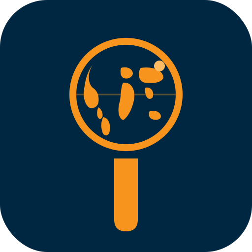
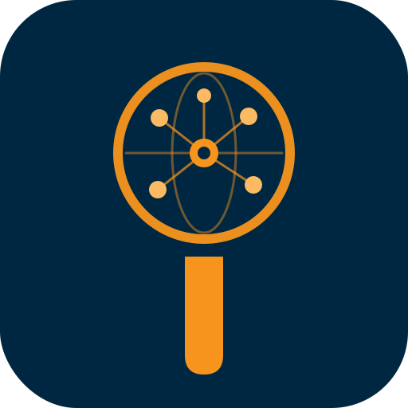

Five directions, each derived from the existing iMining "i". Compare the large preview against the smaller sizes (PWA 192, app icon 64, favicon 32) to see how each holds up.
The dot becomes a wireframe globe. Equator + meridian + tropic lines, with one small accent dot that echoes the satellite in the existing 'i'. Reads cleanly at every size. Most "atlas" of the bunch.
Globe ring with six site pins inside. Directly speaks to the product: sites, assets, locations dashboarded together. The pin cluster echoes the dotted arc in the original 'i'.

Abstracted continents inside the globe ring. Most literally "atlas". Loses some clarity at small sizes — the continents blur together. Recommend only if your product strongly evokes geography.
The stars connect to form an "A" — for ATLAS. Premium feel, very distinctive. The dotted constellation echoes the dot pattern in the original 'i' more literally than any other concept.

Central hub with spokes radiating to asset nodes, inside the globe boundary. Strongest match to "asset management with dashboards across sites". The most product-specific concept.